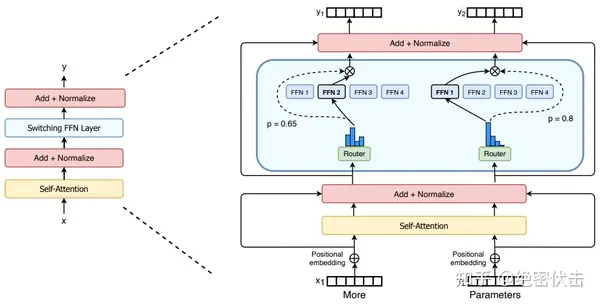

Mixture of Experts
混合专家模型
Google Switch Transformer论文中的MoE结构：

把transformer中的feed forward换成了多专家结构，如上图
每个专家可能是ffn或者是更复杂的结构。
这样扩大了整个网络中的参数量，同时各专家处理不同的子任务，最后将输出进行拼接。
决定输出输入到哪个专家的是门控网络，（可以粗浅的理解，也是个ffn）。
type
sparse moe 和 dense moe，
前者选出top k个专家激活，后者激活所有专家，将所有token输入并乘以权重输出
problems
那么为什么这样的结构可以训练得到更好的效果？
注意到不论是门控网络还是expert，其参数一开始都是随机的，那么一开始门控决定输入到哪个专家完全是随机的，但是其中涉及到一个“巧合”，就是数据输入到某个专家时，假设其参数更适合当前的token，那么他就能更快的拟合，得到更好的loss，那么门控网络的参数也将会被更新为更倾向于选择该expert的值，那么这样不断的拟合，不同的专家的参数适合不同的任务类型，当不同的任务被输入时，训练好的门控网络将会选择更适合当前任务的expert。
需要注意的是，为了避免某些“误会”，（不太好形容，所以用了很多比喻），就是当前expert明明更适合另一个子任务，但是由于输入数据相似，门控错误的认为这个expert更适合，所以在门控中加了些随机量，让门控给予其他专家尝试不同子任务的机会，这一点同蒙特卡洛搜索中相似，为了避免在某个子树中过度探索，会在计算奖励值时加入一些随机惩罚，让其他子树有机会被探索，避免错过最佳路径。